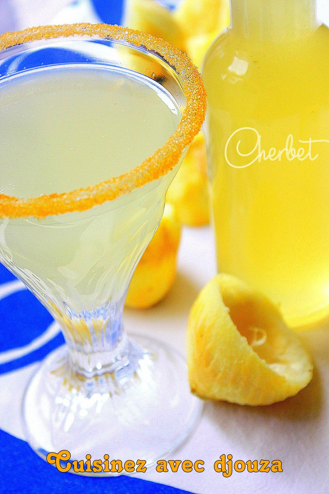

Cherbet
Cherbet

Description:
Le cherbet elkaress est une délicieuse boisson fraîche algérienne désaltérante à base de citron, sucre et légèrement acidulée que l’on retrouve sur nos tables du Ftour pendant le Ramadan. Durant ce mois, la ville de Boufarik près d’Alger devient la destination préférée des jeûneurs, car elle produit la meilleure limonade du pays.
Ingredients:
- 2 gros citrons bio de préférence
- jus et zeste de citron
- 200 gr de sucre
- 1/2 cuillère à thé d’acide citrique (on en trouve à la pharmacie)
2 litres d’eau purifiée
Preparation:
- Dans une casserole bouillante, déposer les citrons lavés afin de retirer de l’amertume.
- Laisser cuire 10 minutes environ.
- Retirer les citrons de l’eau, essuyer et congeler les au moins 3 heures ou une nuit si vous avez le temps.
- Le lendemain, sortir les citrons et laisser décongeler jusqu’à pouvoir les couper en morceaux.
- Passer le tout au robot mixer et mixer jusqu’à obtenir une purée.
- Verser 1 litre d’eau, le zeste de citron et laisser infuser pendant 10 minutes.
- Filtrer d’abord le mélange avec un chinois puis repasser le jus dans un chinois à fin treillis ou munis d’une étamine ou gaze. Laisser écouler le jus.
- Une fois le jus filtré, ajouter la 1/2 cuillère à thé d’acide citrique ainsi que le verre de sucre et le jus de citron.
- Bien mélanger encore une fois et verser un litre d’eau supplémentaire.
- Remuer bien. Goûter et rectifier le sucre si nécessaire.
- Mettre le cherbete au frais jusqu’au moment de servir.
Home page!